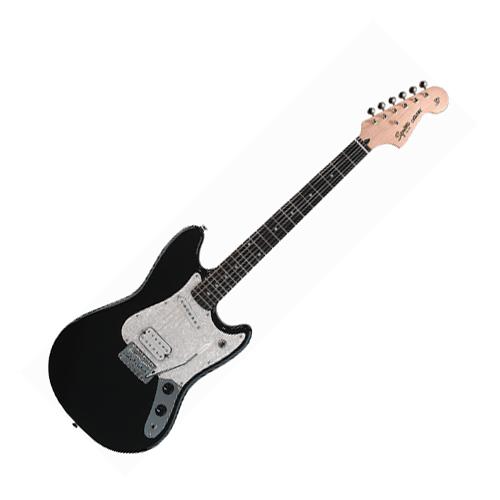

Инсайдерская информация:
Прежде всего помните, что почти все "гитарные" средства - гитарная полироль, гитарное масло, гитарная тряпочка, гитарная отверточка, гитарный очиститель, гитарный шестигранный ключ и так далее - отличаются от негитарных ключей и очистителей только ценой (она раза в три выше).

Для очистки корпуса замечательно подходит автомобильная полироль типа Turtle Wax или тамошняя же Carnauba Wax. Гриф можно пропитывать обычным бытовым техническим маслом, главное, чтобы оно было не вонючим и достаточно прозрачным. Но лимонное, конечно, симпатичнее (кстати, продается в аптеках)
Серьезные загрязнения можно удалить с лакированной поверхности вайт-спиритом (лучше всего тиккуриловским, он не воняет). Вайт-спирит совершенно безопасен для нитролака и полиуретана.
Впрочем, у меня в мастерской сейчас все равно используются специфически гитарные средства. Как-то так случайно получается...
Сейчас: ДэАндреа Лемон Ойл (для чистки не очень грязного грифа) - как и другие "гитарные" лимонные масла, к маслу не имеет особого отношения, но чистит хорошо. Пожалуй, "Данлоп 65 лемон ойл" поинтересней, но дороже. "Плэнет вейвс" не пробовал.
Полироль Данлоп 65 Крим оф карнауба - офигительная штука, карнаубовый воск - натуральная и очень эффективная полироль. Еще и пахнет вкусно. Как уже говорил, такая же карнауба есть в автомагазинах, значительно дешевле.
Полироль ДэАндреа и подобные ей (которые в пшикалках выпускаются) похуже, чем карнаубовые, но гораздо проще в применении и тоже очень эффективны.
Плэнет Вейвс Гидрат (красная гадость в небольшом флаконе с пшикалкой) - сносит любые загрязнения даже с самых загаженных нелакированных накладок (т.е. палисандр, венго, черное дерево), заодно хорошо увлажняет древесину. Я ее использую, только если за грязью не видно дерева. Очень мощная штука.
Данлоп 65 или дэандреа стринг клинер - предназначена для очистки и защиты струн. Далеко не самая нужная вещь, струны надо менять, а не чистить. Но отдаленно полезна.
Чистка металлических частей: если на металле вырос налет или зачатки ржавчины - можно кинуть пораженные детали в раствор какого-нибудь силлит бэнг или типа того. Ненадолго! Потом вынуть, тщательно промыть водой и не менее тщательно обработать WD-40 - она вытеснит всю воду и заодно смажет детали. Положить еще смазки там, где это надо (колки, например), собрать все обратно.
Если металл просто старый и потертый - то мелкая-мелкая шкурка, потом паста ГОИ.
Этой же пастой можно эффективно очистить лады от налета (почти на любой немолодой гитаре такой есть, особенно по краям ладов)
Тряпочки: для лака - мягкие ткани или микрофибра (типа тех, которые для оптики). Для нелакированных накладок - войлок (счищает грязь много эффективней, чем обычная тряпка).
Пыль: сдувается из труднодоступных мест сжатым воздухом.
Смазка также очень важна! В первую очередь должен смазываться верхний порожек (естественно, если там не топ-лок) и опорные части тремоло (винты на фендерах и флойд-роуз, ножи флойда, ось калеровского тремоло). Верхний порожек смазывается графитной смазкой (есть в любом автомагазине). Хуже - просто прокрасить мягким карандашом. Ножи и опоры тремоло смазываются техническим маслом и, менее интенсивно - графитной смазкой.
Вообще, тремоло хорошо раз в год или чаще разбирать полностью и обрабатывать все детали WD-40 (этого чудного вещества вообще много не бывает). Тюноматик можно не разбирать, а просто хорошенько промыть вэдэшкой и покрутить туда-сюда винты мензуры, при необходимости добавляя смазку в плохо движущиеся узлы.
Тефлоновая смазка применима, например, если винт плохо закручивается в дерево. Позволяет без намокания древесины получить минимальное трение.
Следите за ржавчиной!! Часто заржавевший винт отказывается выниматься вовсе. Легче предупреждать такое заблаговременно, чем его высверливать.
Если потенциометры или переключатели начали шуршать - это, скорее всего, вызвано загрязнением контактов. Надо брызнуть внутрь средством Cramolin Contaclean, продается в радиомагазинах типа "Профи" (у них дешевле всего). Иногда даже можно наловчиться и проделать это снаружи, не открывая гитару (брызгать на щель между валом и резьбой снаружи, сняв ручку и вытягивая вал вверх).